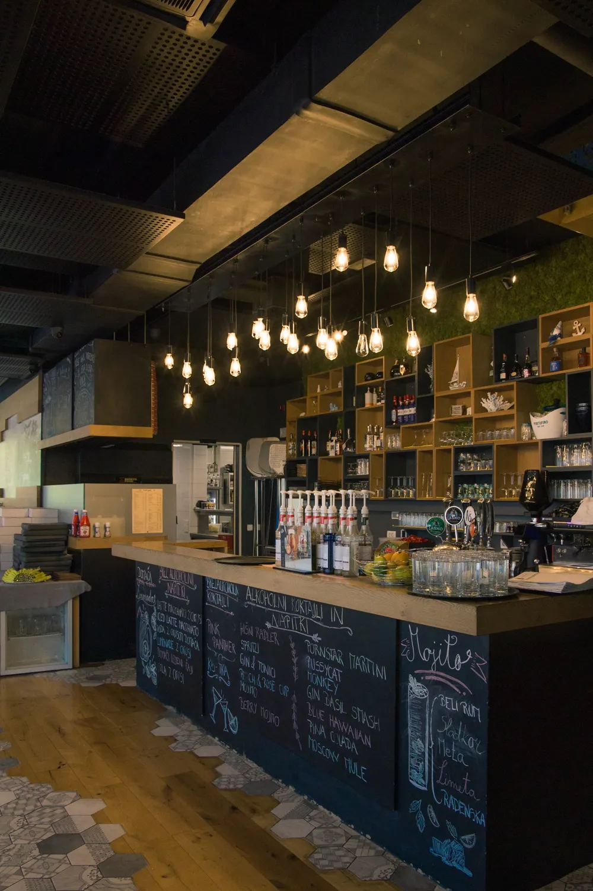
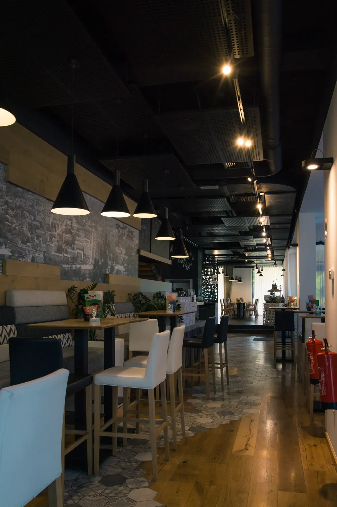
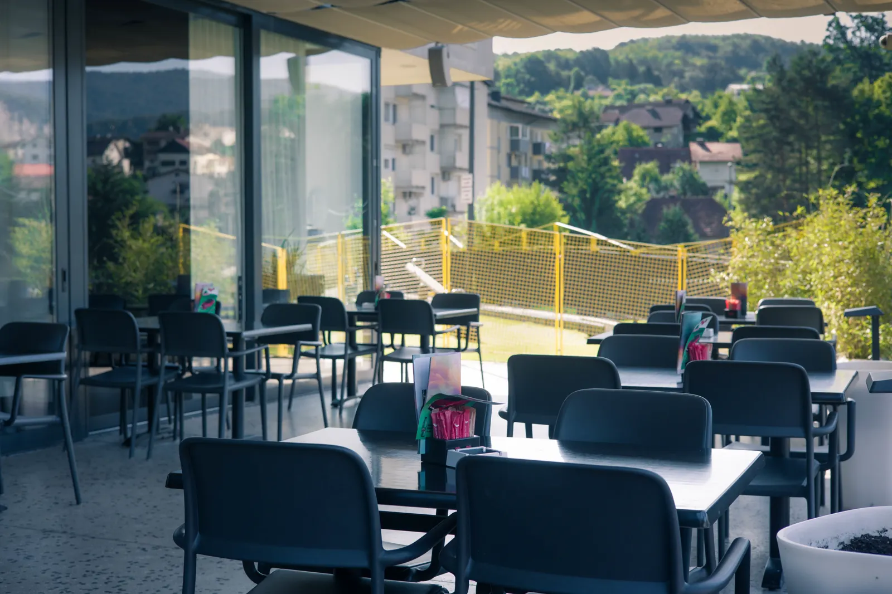
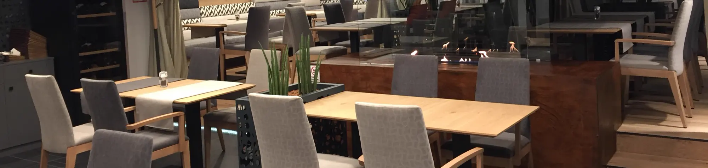

Malica
ob delovnih dneh od 9. do 13. ure
- Dnevna malicaaktualne malice tedna na Facebook strani K5
- Solata iz bifeja
- Goveja juha z rezanci
- Jurčkova juha

Rudarska cesta 8a · Trbovlje
Prijeten, moderno opremljen lokal v Trbovljah. Majhne sladke dobrote, kulinarična ponudba od pic do ribjih specialitet, izbrana pijača ali umirjen prostor za sestanek.
Črn strop, hrastov les, zelene stene in žarnice nad šankom. Vse fotografije so posnete v K5.







Svetla dvorana v nadstropju restavracije nudi udobje zasebnosti za vašo zabavo, za večje ali manjše skupine.
Ločen prostor za zaključene družbe je primeren tudi za sestanke in poslovna srečanja ob kosilu ali kavi.
Rezerviraj dvorano

Po dogovoru organizirajo postrežbo hrane in pijače na kraju po vašem izboru: piknik, sestanek, poslovno srečanje, rojstni dan, poroka ali zabava.
Restavracija & kavarna K5 je poslovna enota družbe AGM Nemec d.o.o., Marno 44, 1431 Dol pri Hrastniku.